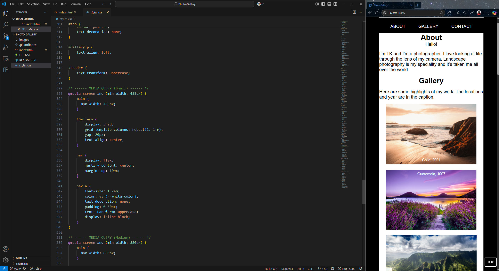
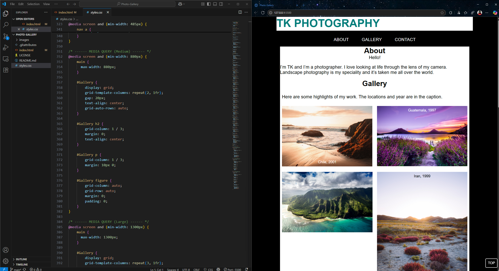
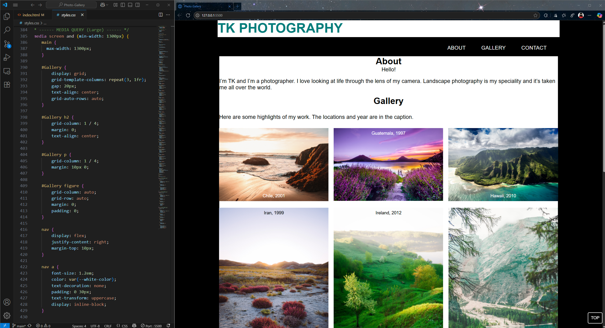

Photo Gallery
This was a class assignment to create a photo gallery website. The requirement was that the website needed to be responsive and have a phone, tablet, and web view. I accomplished this task by using a flex display grid and media queries. For the typical small, medium, and large screen sizes, each had their media query to ensure the website dynamically changed per size. The project was done on time and uploaded to GitHub.
The small media query on the website along with the html code. This media query forces the flex grid to have a single column

The medium media query on the website along with the CSS code. This media query forces the flex grid to have two columns

The large media query on the website along with the CSS code
This media query forces the flex grid to have three columns
